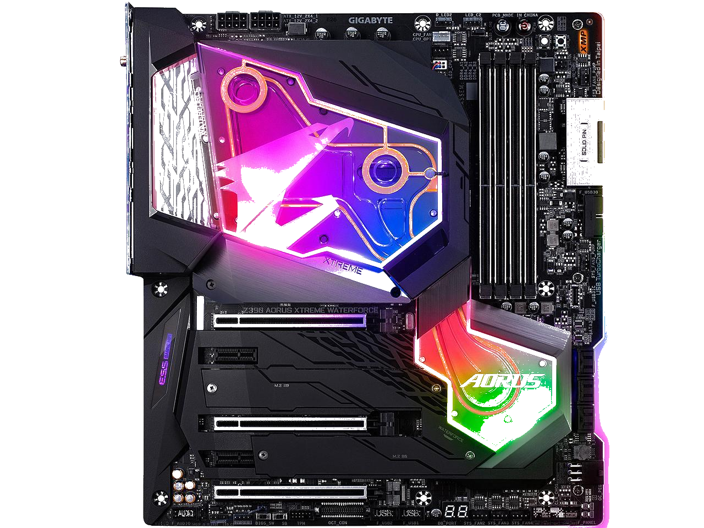

What Is MotherBoard?
Especially important for 3D rendering, the GPU does exactly what its name suggests and processes huge batches of graphic data. You will find that your computer’s graphics card has at least one GPU. As opposed to the basic on-board graphic capabilities that PC motherboards supply, dedicated graphics cards interface with the motherboard via an expansion slot to work almost exclusively on graphic rendering. This also means you can upgrade your graphics card if you want to get a bit more performance from your PC.
Not only this, but modern GPUs fulfil a broad computational workload beyond just rendering, making them an extension to the central processing unit.
*Click Those Asus and Msı Icons to find out more information about that brand.

What Is Asus?
AsusTek Computer Inc. is a Taiwan-based multinational computer and phone hardware and electronics company headquartered in Beitou District, Taipei, Taiwan. Its products include desktop computers, laptops, netbooks, mobile phones, networking equipment, monitors, WIFI routers, projectors, motherboards, graphics cards, optical storage, multimedia products, peripherals, wearables, servers, workstations, and tablet PCs. The company is also an original equipment manufacturer (OEM).
*The Photo Seeing on the above is the Asus's one of the powerful MotherBoard version = Asus Rog Dominus
What Is Msi?
AMD is the second largest maker of personal computer microprocessors after Intel. They also make flash memory, integrated circuits for networking devices, and programmable logic devices. AMD reports that it has sold over 100 million x86 (Windows-compatible) microprocessors. Its Athlon (formerly called the "K7") microprocessor, delivered in mid-1999, was the the first to support a 200 MHz bus. In March, 2000, AMD announced the first 1 gigahertz PC microprocessor in a new version of the Athlon.
*The Photo Seeing on the above is the Msı's one of the powerful MotherBoard version = ASUS TUF Z390-Plus